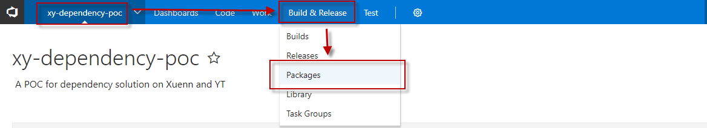
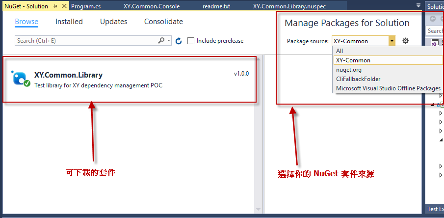
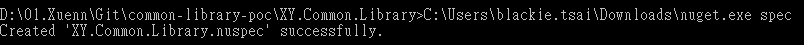
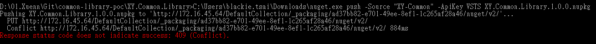

分享如何透過 TFS 建立 Private NuGet Server 並將程式碼封裝後發佈給其他應用程式使用
之從 NuGet 帶入了 .NET 的開發世界後，他就迅速地變成大家通用的第三方相依管理工具，大幅的幫我們降低發佈上複雜的套件相依關係。而今天來介紹一下如何透過 TFS 的 Package Management 套件建立起組織內部自己使用的Private NuGet Server 。
Install TFS and Package Management extension
這邊展示的環境是用 TFS 2017 update 2 安裝，所以安裝上本身預設有帶起 Package Management 套件，如果是用稍早版本的就要麻煩自己安裝一下了。安裝可以參考官方說明
這邊可以透過 套件管理(Extensions) 確認當前環境是否已安裝必備套件：
如果完成的話可以在該專案的 建置與發佈(Build & Release) 內看到 套件管理(Packages) 的項目：

Setup TFS NuGet Server Environment
首先加入新的 NuGet 來源位置：
不管選擇哪一種方法都可以加入，只是用的工具不同。方法１適合用在已經安裝 Visaul Studio 的環境或是要手動加入設定檔，方法2則是幫我們從全域做修改。
這邊不用特別擔心加入新的參考會不會找不到官方的來源，基本上它的參照是輪尋的，根據你設定的來源優先序做查詢。而我們也可以在開發或使用時特別指定抓取特定來源的 NuGet 來源套件，在 Visaul Studio 的環境設定如下(Tools>Options>NuGet Package Manager>Package Sources):
當我們設定好之後就可以看來來源端多了一筆紀錄並呈現當前可開放使用的套件：

除了上述方法外也可以透過 NuGet CLI協助我們完成環境設定與類別庫打包上傳等功能，接著我們就來實際開發一個類別庫上傳至 TFS 上作為套件供其他程式參考使用。
Create NuGet Project
完整的 CLI 指令可以參考 NuGet CLI Command
這邊我們先打開 VS 並新增一個類別庫專案，裡面包含一個類別(BlackieUtility)，實際內容如下：
BlackieUtility.cs
1 | namespace XY.Common.Library |
當上面類別庫建立完成後，可以透過以下指令在該專案底下新增一個 NuGet 套件規格聲明檔(.nuspec):
nuget.exe spec

產生出來的內容如下：
XY.Common.Library.nuspec
1 | <?xml version="1.0"?> |
這邊我們需要指定當前要發佈的 dll 位置(需對應不同的.net framework版本資料夾做發佈)與相關設定描述，我們也可以提供一份readme.txt，作為專案的描述檔案
當我們確定設定都正確可以透過以下指令執行 NuGet 打包 ：
nuget.exe pack <my_package.nupkg>
Publish NuGet Package to TFS
而當我們需要上傳時也可透過以下指令完成上傳：
nuget.exe push -Source "XY-Common" -ApiKey VSTS <my_package.nupkg>

這邊與先前介紹的Use Package from Private NPM Regisry in TFS2017一樣不能上傳重複的 Versioning:

這邊採用的是微軟官方的規則 - Assembly Versioning:
不過實際上傳的 NuGet versioning 還是建議規則統一遵循 Semantic Versioning 的設計
而當上傳不同版本的類別後可以從介面這邊看到就有多個版本可以選取了